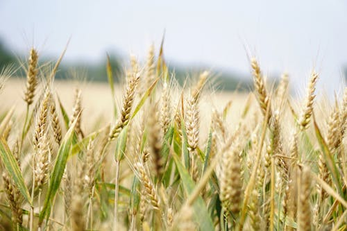

Wheat: The Staple Crop

Uses of Wheat
Wheat is a versatile crop widely used as a staple food across the world. Here are some of its primary uses:
- Food: Wheat grains are ground into flour to make bread, pasta, pastries, and many other foods.
- Animal Feed: Wheat is often used as feed for livestock due to its nutritional benefits.
- Industrial Uses: Wheat is used in biofuels, paper production, and in certain cosmetics and pharmaceuticals.
Types of Wheat
There are several main types of wheat, each used for different purposes:
- Hard Red Wheat: Commonly used for bread due to its high gluten content.
- Soft Red Wheat: Typically used for cakes, cookies, and pastries.
- Durum Wheat: Known for its use in pasta and semolina products.
- White Wheat: Milder in flavor, used for softer baked goods.
Growth Requirements for Wheat
For optimal growth, wheat needs specific environmental and soil conditions:
- Climate: Wheat thrives in temperate climates with moderate rainfall.
- Soil: Loamy soils with good drainage and a pH level between 6 and 7.5 are ideal for wheat.
- Temperature: It grows best between 12°C to 25°C.
Natural Fertilizers for Wheat
Using natural fertilizers can improve wheat yield while maintaining soil health:
- Compost: Provides essential nutrients and improves soil structure.
- Manure: Increases nitrogen content, promoting growth.
- Green Manure: Adds organic matter and nutrients when incorporated into the soil.
Pest and Disease Prevention
Effective strategies to prevent wheat diseases and pests:
- Crop Rotation: Helps prevent soil-borne diseases.
- Resistant Varieties: Choose wheat varieties that resist common diseases.
- Water Management: Use proper irrigation techniques to avoid fungal diseases.
Health Benefits of Wheat
- High in Fiber: Wheat promotes digestive health.
- Rich in Vitamins: Contains B vitamins, essential for energy and cell function.
- Source of Protein: Provides essential amino acids.
- Heart Health: Whole wheat helps reduce cholesterol levels.
Nutritional Value of Wheat (per 100g)
- Calories: 327 kcal
- Protein: 13g
- Carbohydrates: 71g
- Fiber: 12g
- Fats: 1.5g
- Minerals: Iron, Magnesium, Phosphorus
Common Pests and Diseases in Wheat
- Rust Disease: A fungal infection causing red or yellow patches on leaves.
- Aphids: Small insects that feed on wheat sap and spread diseases.
- Wheat Streak Mosaic Virus: Causes yellow streaks on leaves, reducing yield.
Frequently Asked Questions
1. What is the best time to plant wheat?
Planting time varies depending on the region but is typically in the fall for winter wheat and in spring for spring wheat.
2. How long does it take for wheat to grow?
Wheat takes approximately 7-8 months to mature, depending on the variety and climate.
3. What is the difference between whole wheat and white wheat?
Whole wheat uses the entire grain, including the bran and germ, while white wheat typically has the bran and germ removed, giving it a lighter color and texture.
Back to Crop List